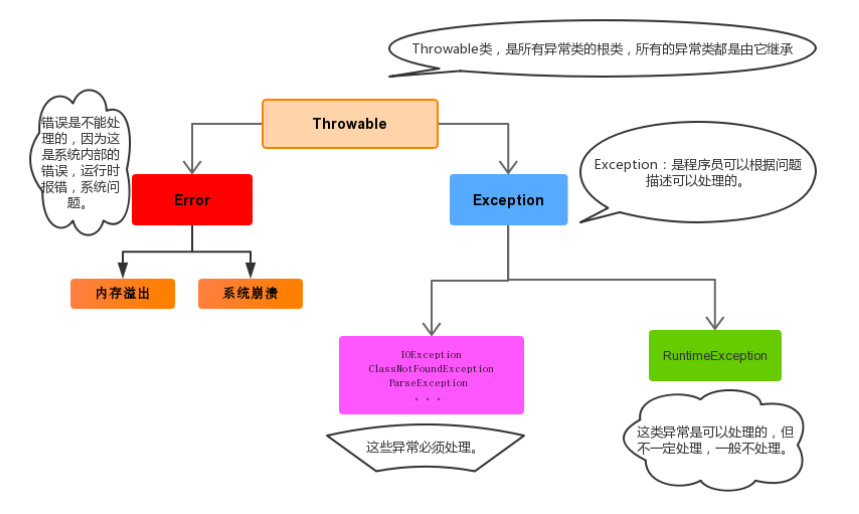
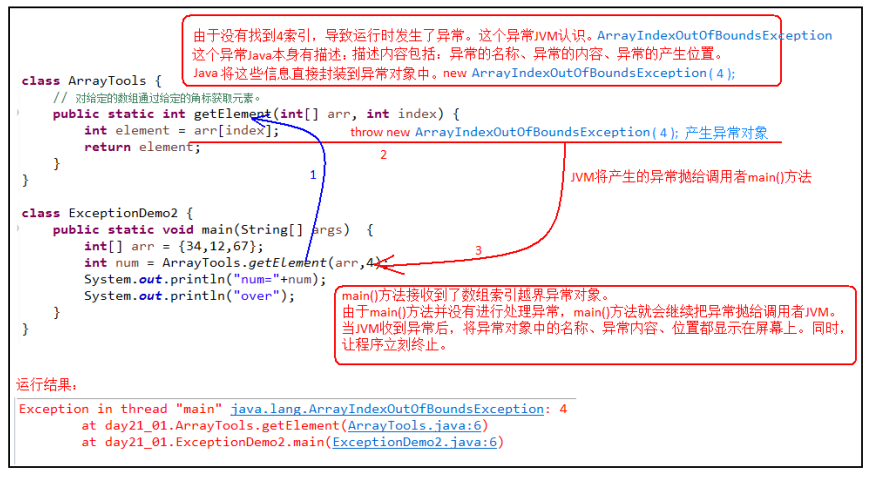

java世界中，万物皆对象，异常和错误也是对象！
概念
异常概念
异常，就是不正常的意思。在生活中:医生说,你的身体某个部位有异常,该部位和正常相比有点不同,该部位的功能将受影响.在程序中的意思就是：
异常 ：指的是程序在执行过程中，出现的非正常的情况，最终会导致JVM的非正常停止。
在Java等面向对象的编程语言中，异常本身是一个类，产生异常就是创建异常对象并抛出了一个异常对象。Java处理异常的方式是中断处理。
异常指的并不是语法错误,语法错了,编译不通过,不会产生字节码文件,根本不能运行.
异常体系
异常机制其实是帮助我们找到程序中的问题，异常的根类是 java.lang.Throwable ，其下有两个子类：java.lang.Error 与 java.lang.Exception ，平常所说的异常指 java.lang.Exception 。
Throwable体系：
Error:严重错误Error，无法通过处理的错误，只能事先避免，好比绝症。Exception:表示异常，异常产生后程序员可以通过代码的方式纠正，使程序继续运行，是必须要处理的。好比感冒、阑尾炎。
Throwable中的常用方法：
public void printStackTrace():打印异常的详细信息。
包含了异常的类型*,异常的原因,还包括异常出现的位置,在开发和调试阶段,都得使用printStackTrace*。public String getMessage():获取发生异常的原因。
提示给用户的时候*,*就提示错误原因。public String toString():获取异常的类型和异常描述信息(不用)
异常分类
我们平常说的异常就是指Exception，因为这类异常一旦出现，我们就要对代码进行更正，修复程序
异常(Exception)的分类:根据在编译时期还是运行时期去检查异常?
- 编译时期异常:checked异常。在编译时期,就会检查,如果没有处理异常,则编译失败。(如日期格式化异常)
- 运行时期异常:runtime异常。在运行时期,检查异常.在编译时期,运行异常不会编译器检测(不报错)。(如数学异常)

异常的产生过程解析
直接看一个分析

异常的处理
抛出异常throw
在编写程序时，我们必须要考虑程序出现问题的情况。比如，在定义方法时，方法需要接受参数。那么，当调用方法使用接受到的参数时，首先需要先对参数数据进行合法的判断，数据若不合法，就应该告诉调用者，传递合法的数据进来。这时需要使用抛出异常的方式来告诉调用者。
在java中，提供了一个throw关键字，它用来抛出一个指定的异常对象。那么，抛出一个异常具体如何操作呢？
- 创建一个异常对象。封装一些提示信息(信息可以自己编写)。
- 需要将这个异常对象告知给调用者。怎么告知呢？怎么将这个异常对象传递到调用者处呢？通过关键字throw就可以完成。throw 异常对象。
throw用在方法内，用来抛出一个异常对象，将这个异常对象传递到调用者处，并结束当前方法的执行。
使用格式：
throw new 异常类名(参数);
例如：
throw new NullPointerException("要访问的arr数组不存在");
throw new ArrayIndexOutOfBoundsException("该索引在数组中不存在，已超出范围");
演示
public class ThrowDemo {
public static void main(String[] args) {
//创建一个数组
int[] arr = {2,4,52,2};
//根据索引找对应的元素
int index = 4;
int element = getElement(arr, index);
System.out.println(element);
System.out.println("over");
}
//根据 索引找到数组中对应的元素
public static int getElement(int[] arr,int index){
//判断 索引是否越界
if(index<0 || index>arr.length‐1){
/*
判断条件如果满足，当执行完throw抛出异常对象后，方法已经无法继续运算。
这时就会结束当前方法的执行，并将异常告知给调用者。这时就需要通过异常来解决。
*/
throw new ArrayIndexOutOfBoundsException("哥们，角标越界了~~~");
} i
nt element = arr[index];
return element;
}
}
注意：如果产生了问题，我们就会throw将问题描述类即异常进行抛出，也就是将问题返回给该方法的调用者。
那么对于调用者来说，该怎么处理呢？一种是进行捕获处理，另一种就是继续将问题声明出去，使用throws声明处理。
声明异常throws
声明异常：将问题标识出来，报告给调用者。如果方法内通过throw抛出了编译时异常，而没有捕获处理，那么必须通过throws进行声明，让调用者去处理。
关键字throws运用于方法声明之上,用于表示当前方法不处理异常,而是提醒该方法的调用者来处理异常(抛出异常).
声明异常格式：
修饰符 返回值类型 方法名(参数) throws 异常类名1,异常类名2…{ }
声明异常的代码演示：
public class ThrowsDemo {
public static void main(String[] args) throws FileNotFoundException {
read("a.txt");
}
// 如果定义功能时有问题发生需要报告给调用者。可以通过在方法上使用throws关键字进行声明
public static void read(String path) throws FileNotFoundException {
if (!path.equals("a.txt")) {//如果不是 a.txt这个文件
// 我假设 如果不是 a.txt 认为 该文件不存在 是一个错误 也就是异常 throw
throw new FileNotFoundException("文件不存在");
}
}
}
throws用于进行异常类的声明，若该方法可能有多种异常情况产生，那么在throws后面可以写多个异常类，用逗号隔开。
public class ThrowsDemo2 {
public static void main(String[] args) throws IOException {
read("a.txt");
}
public static void read(String path)throws FileNotFoundException, IOException {
if (!path.equals("a.txt")) {//如果不是 a.txt这个文件
// 我假设 如果不是 a.txt 认为 该文件不存在 是一个错误 也就是异常 throw
throw new FileNotFoundException("文件不存在");
}
if (!path.equals("b.txt")) {
throw new IOException();
}
}
}
2.4 捕获异常try…catch
如果异常出现的话,会立刻终止程序,所以我们得处理异常:
该方法不处理,而是声明抛出,由该方法的调用者来处理(throws)。
在方法中使用try-catch的语句块来处理异常。
try-catch的方式就是捕获异常。
捕获异常：Java中对异常有针对性的语句进行捕获，可以对出现的异常进行指定方式的处理。
捕获异常语法如下：
try{
编写可能会出现异常的代码
}catch(异常类型 e){
处理异常的代码
//记录日志/打印异常信息/继续抛出异常
}
try：该代码块中编写可能产生异常的代码。
catch：用来进行某种异常的捕获，实现对捕获到的异常进行处理。
注意:try和catch都不能单独使用,必须连用。
演示如下：
public class TryCatchDemo {
public static void main(String[] args) {
try {// 当产生异常时，必须有处理方式。要么捕获，要么声明。
read("b.txt");
} catch (FileNotFoundException e) {// 括号中需要定义什么呢？
//try中抛出的是什么异常，在括号中就定义什么异常类型
System.out.println(e);
}
System.out.println("over");
}
//我们 当前的这个方法中 有异常 有编译期异常
public static void read(String path) throws FileNotFoundException {
if (!path.equals("a.txt")) {//如果不是 a.txt这个文件
// 我假设 如果不是 a.txt 认为 该文件不存在 是一个错误 也就是异常 throw
throw new FileNotFoundException("文件不存在");
}
}
}
如何获取异常信息：
Throwable类中定义了一些查看方法:
public String getMessage():获取异常的描述信息,原因(提示给用户的时候,就提示错误原因。public String toString():获取异常的类型和异常描述信息(不用)。public void printStackTrace():打印异常的跟踪栈信息并输出到控制台。
包含了异常的类型*,异常的原因,还包括异常出现的位置,在开发和调试阶段,都得使用printStackTrace*。
finally 代码块
finally：有一些特定的代码无论异常是否发生，都需要执行。另外，因为异常会引发程序跳转，导致有些语句执行不到。而finally就是解决这个问题的，在finally代码块中存放的代码都是一定会被执行的。
什么时候的代码必须最终执行？
当我们在try语句块中打开了一些物理资源(磁盘文件/网络连接/数据库连接等),我们都得在使用完之后,最终关闭打开的资源。
finally的语法:
try...catch....finally:自身需要处理异常,最终还得关闭资源。
注意:finally不能单独使用。
比如在我们之后学习的IO流中，当打开了一个关联文件的资源，最后程序不管结果如何，都需要把这个资源关闭掉。
finally代码参考如下：
public class TryCatchDemo4 {
public static void main(String[] args) {
try {
read("a.txt");
} catch (FileNotFoundException e) {
//抓取到的是编译期异常 抛出去的是运行期
throw new RuntimeException(e);
} finally {
System.out.println("不管程序怎样，这里都将会被执行。");
}
System.out.println("over");
}
//我们 当前的这个方法中 有异常 有编译期异常
public static void read(String path) throws FileNotFoundException {
if (!path.equals("a.txt")) {//如果不是 a.txt这个文件
// 我假设 如果不是 a.txt 认为 该文件不存在 是一个错误 也就是异常 throw
throw new FileNotFoundException("文件不存在");
}
}
}
当只有在try或者catch中调用退出JVM的相关方法,此时finally才不会执行,否则finally永远会执行。
异常注意事项
多个异常使用捕获又该如何处理呢？
多个异常分别处理。
多个异常一次捕获，多次处理。
多个异常一次捕获一次处理。
一般我们是使用一次捕获多次处理方式，格式如下：
try{
编写可能会出现异常的代码
}catch(异常类型A e){ 当try中出现A类型异常,就用该catch来捕获.
处理异常的代码
//记录日志/打印异常信息/继续抛出异常
}catch(异常类型B e){ 当try中出现B类型异常,就用该catch来捕获.
处理异常的代码
//记录日志/打印异常信息/继续抛出异常
}
注意:这种异常处理方式，要求多个catch中的异常不能相同，并且若catch中的多个异常之间有子父类异常的关系，那么子类异常要求在上面的catch处理，父类异常在下面的catch处理。
运行时异常被抛出可以不处理。即不捕获也不声明抛出。
如果finally有return语句,永远返回finally中的结果,避免该情况.
如果父类抛出了多个异常,子类重写父类方法时,抛出和父类相同的异常或者是父类异常的子类或者不抛出异常。
父类方法没有抛出异常，子类重写父类该方法时也不可抛出异常。此时子类产生该异常，只能捕获处理，不能声明抛出
自定义异常
为什么需要自定义异常类?
我们说了Java中不同的异常类,分别表示着某一种具体的异常情况,那么在开发中总是有些异常情况是SUN没有定义好的,此时我们根据自己业务的异常情况来定义异常类。例如年龄负数问题,考试成绩负数问题等等。
在上述代码中，发现这些异常都是JDK内部定义好的，但是实际开发中也会出现很多异常,这些异常很可能在JDK中没有定义过,例如年龄负数问题,考试成绩负数问题.那么能不能自己定义异常呢？
什么是自定义异常类?
在开发中根据自己业务的异常情况来定义异常类.
自定义一个业务逻辑异常: RegisterException。一个注册异常类。
异常类如何定义:
自定义一个编译期异常: 自定义类 并继承于
java.lang.Exception。自定义一个运行时期的异常类:自定义类 并继承于
java.lang.RuntimeException。
练习
要求：我们模拟注册操作，如果用户名已存在，则抛出异常并提示：亲，该用户名已经被注册。
首先定义一个登陆异常类RegisterException：
// 业务逻辑异常
public class RegisterException extends Exception {
public RegisterException() {
}
public RegisterException(String message) {
super(message);
}
}
模拟登陆操作，使用数组模拟数据库中存储的数据，并提供当前注册账号是否存在方法用于判断
public class Demo {
// 模拟数据库中已存在账号
private static String[] names = {"bill","hill","jill"};
public static void main(String[] args) {
//调用方法
try{
// 可能出现异常的代码
checkUsername("nill");
System.out.println("注册成功");//如果没有异常就是注册成功
}catch(RegisterException e){
//处理异常
e.printStackTrace();
}
}
//判断当前注册账号是否存在
//因为是编译期异常，又想调用者去处理 所以声明该异常
public static boolean checkUsername(String uname) throws LoginException{
for (String name : names) {
if(name.equals(uname)){//如果名字在这里面 就抛出登陆异常
throw new RegisterException("亲"+name+"已经被注册了！");
}
}
return true;
}
}